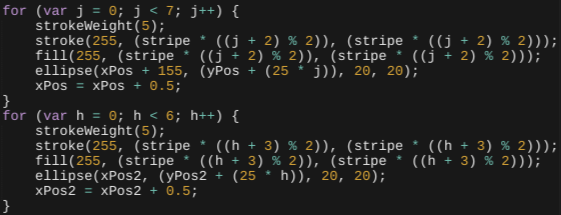
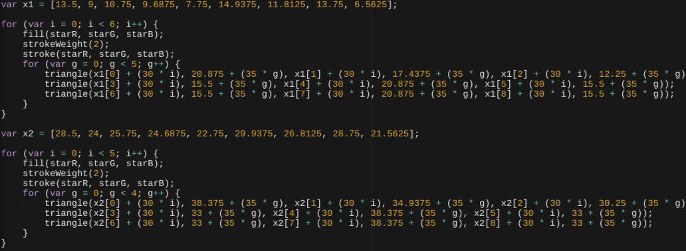

| About Me | Generative Art | How-To for Generative Art | Interactive Page | How-To for Interactive Page |
I created a modern American Flag in Javascript. The flag imitates the actual American Flag as much as possible by adding the 50 stars along with the 13 stripes with alternating colors of red and white. All you have to do is to press the spacebar to change the stars' color to silver.
Using the code above, I created a function that changes the variables' value upon pressing the spacebar. The spacebar has a keycode of 32. These variables code for the RGB values of the stars on the American Flag I drew. The RGB values for the stroke and the fill color are (starR, starG, starB). The condition in this code states that if the variables are equal to 255 (meaning the stars are white), then the variables switch to 154 (silver). The else statement switches the variable to 255 (white) if the variable is already 154 (silver). If the color of the stars can switch to silver, two things happen I also fulfill my requirement of one interaction in my generative art.
Another thing I did was to create the stripes using a loop. The loop was made using the below code. The first code coded for the first seven stripes, shown by the limit of seven. The strokeweight (width of outline) was set at 5 pixels, so that the circle has a diameter of exactly 25 pixels. This was done so that the height of the canvas would be exactly 25 multiplied by 13, which is 325.
In addition to that, the stroke and fill color would alternate between red and white. The RGB value of red is (255, 0, 0) and the RGB value of white is (255, 255, 255). To alternate between the two, I set up the G and B values to be the variable stripe (which is equal to 255) multiplied by 1 or 0 to create the numbers 255 or 0. To alternate 1 and 0, I used the modulus (remainder) of counter j added by 2 then divided by 2. I added 2 to j to prevent a number lower than 2 appearing, since the remainder would not be 1 or 0 if a number lower than 2 was divided by 2. With this code, the stroke and fill color will either be (255, 0, 0) or (255, 255, 255) to represent red or white.
Finally, the ellipse itself had to be created in the loop. The variable xPos, which is the x position of the ellipse, was added by 155 so that the stripe would not start at the beginning, but instead 155 pixels after the start. The y position would add by 25 * j, since j starts at 0. Therefore, the first stripe still has a y-value of the variable yPos (which is equal to 12.5, the middle of the ellipse). Also, xPos would have to add itself by 0.5 constantly, so that it would create a line effect of the multiple ellipses.
The second loop codes for the next 6 stripes. There are only a few differences between the two loops. The counter is h instead of j, and the limit is six and not seven. The strokeweight stayed the same, but the fill and stroke color have slightly different colors. For the first seven stripes, the color red came up first, but the next six stripes start at white. For this reason, I added 3 to h instead of 2 to start with the color white. If the color red came up first for the next six stripes, then there would be two red stripes in a row, since the first seven stripes end with red. Finally, the second loop starts from the beginning of the flag instead of 155 pixels from it. I wanted to make this flag as accurate as possible to the actual American Flag.
The above code codes for the 50 stars in the flag. First off, we need to know how the stars were made. The first triangle is for the top-left and bottom-right corners.
The second triangle is for the top-right and bottom-left corners.
Finally, the third triangle is for the top corner.
This star is the combination of all three triangles.
After creating each star, I would loop it within each row. In the 9 rows, the odd numbered rows have six stars, while the even numbered rows have five stars. Each star is 30 pixels away from the star to its left/right and 35 pixels away from the star to the top/bottom of it. I also used an array for my variable so that it could contain multiple values at once. This way, I would not need so many variables or code.
In addition to the original loop I created to loop the stars within their row, I would also have to loop the columns. To do this, I created a second loop that loops the y-value of the stars as well as limits the the amount of columns to five. Without these loops, I would have to manually enter each star's coordinates. Using loops is more efficient and it requires much less time to code.
The second group of loops is to code the second set of stars. This set has five stars per row. I positioned these stars to be in between the first set so they alternate like the actual flag does.
One important choice I made was to change the stars' color to silver upon pressing the spacebar. I chose this color because it was very similar to white and it looks very nice on the American Flag. I also chose to make the flag as similar to the actual flag as possible.
This project has changed my views on Art by showing me that the most basic shapes could create art. This project has also enhanced my skill in Programming by teaching me how to use various functions in Javascript. I have some basic experience in Javascript after finishing this project.
If I had more time, I would want to be able to change the colors of all the things instead of only the stars. This way, the change in color would be more noticable than before. I would also want to add previous versions of the flag before the modern flag. Finally, I would want to be able to change to different colors.
Some things that did not work out for me: